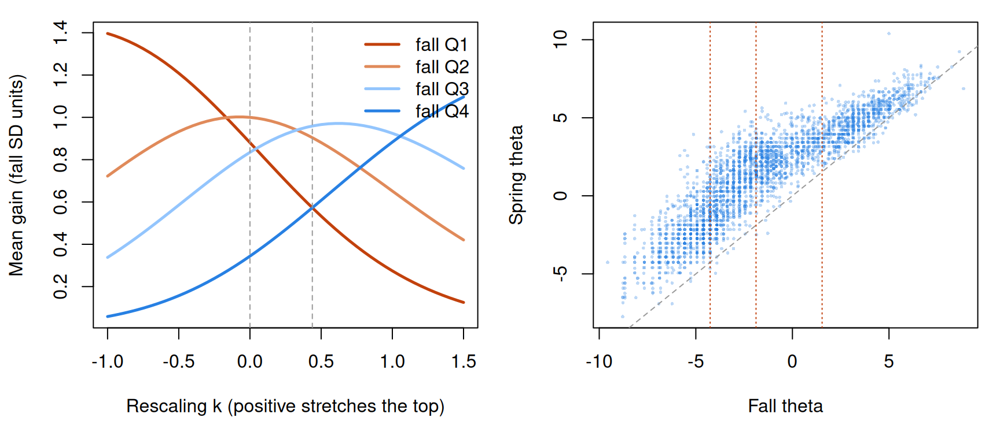

Scale properties: is the scale equal-interval?
What this is for
Who gains more in a year of learning to read, the child who starts behind or the child who starts ahead? In the Project KIDS reading studies, the bottom quarter in the fall gained more than twice as much by spring, in Rasch logits, as the top quarter. Is that a fact about reading or about the scale? A gain compares intervals at two places on the scale, and What is measurement? showed that rescaling can change a mean difference. This lesson asks what would give \(\theta\) an equal unit, what the Rasch model licenses when it fits, and which conclusions about gains, growth and gaps survive when we can’t be sure it does.
Goals
By the end of this lesson you should be able to:
- say what an equal unit would be and what Stevens, Michell, and Borsboom and Mellenbergh ask of the evidence for one;
- state the cancellation conditions and check them on a table of proportions correct;
- explain what the Rasch model licenses about the unit of \(\theta\), why that depends on fit, and why a 2PL’s metric is a convention;
- decide whether a comparison of gains or gaps keeps its sign under every order-preserving rescaling;
- analyse gains by starting level in longitudinal item responses, separating conclusions that depend on the scale from those that don’t.
Core ideas
What an equal unit would mean
Where would an equal unit come from? Stevens (1946) settles it by rule: a scale is interval if we agree to allow only linear transformations of it. Michell (1997) answers that whether an attribute is quantitative is an empirical hypothesis, one that psychology has mostly assumed rather than tested. Borsboom and Mellenbergh (2004) reply that item response models are checked against data as a matter of course, and that at least one class of them is a form of additive conjoint measurement, so its fit tests the quantitative hypothesis jointly with the model’s other assumptions.
We can lay rods end to end to check that two units of length make a double unit; we can’t do that with reading ability. What evidence could show that the step from \(\theta = -2\) to \(-1\) equals the step from \(1\) to \(2\)?
Additive conjoint measurement, and what the Rasch model licenses
Luce and Tukey (1964) showed how to get a unit from order alone. Suppose ability and item easiness jointly determine the probability of a correct response. If they combine additively, \(\Pr(x_{ij} = 1) = F(\theta_j - b_i)\) for some increasing \(F\), the table of probabilities must obey certain ordering conditions, the cancellation conditions. Conversely, if a rich enough table obeys them, additive numbers exist, unique up to a linear transformation with a common unit: an interval scale, derived from which cells are larger than which.
The Rasch model is additive in this sense, with \(F\) the logistic function (Perline, Wright & Wainer, 1979). What does that pin down?
Try it: which rescalings keep the Rasch model?
Three Rasch items (\(b = -2, 0, 2\)) plotted against \(f_k(\theta) = (e^{k\theta} - 1)/k\), the rescaling from What is measurement?; \(k = 0\) leaves \(\theta\) alone.
At \(k = 0\) the three curves are copies of one another, each 2.20 wide: a Rasch curve is one curve slid along \(\theta\). Move \(k\) and the copies stop matching; stretching the top widens the hard item’s curve and squeezes the easy item’s. If the Rasch model holds on \(\theta\), it fails on every nonlinear rescaling, and only \(\beta_0 + \beta_1\theta\) keeps the curves alike. That is the licence: if the data follow the Rasch model, \(\theta\) is an interval scale.
Additivity also shows in a table.
Sufficiency also says what \(\theta\) adds: with everyone on the same items, \(\hat\theta\) orders respondents exactly as \(r\) does, so \(\theta\) contributes only spacing, and the spacing is only as good as the additive structure behind it.
That every respondent orders the items the same way is the first cancellation condition (single cancellation). The second, double cancellation, links three respondents and three items: two inequalities between cells imply a third, because under additivity the premises add up to the conclusion (Go deeper, below).
Try it: check the cancellation conditions
Five respondents (\(\theta\) from −2 to 2, top to bottom) and five items, hardest on the left; each cell is a probability correct. The slider lets the slopes differ (0 is the Rasch model).
At 0 both counts are zero. Let the slopes differ by 0.25 and some curves cross: a low scorer finds one item easier, a high scorer the other, and double cancellation starts to fail. No relabelling of \(\theta\) repairs a crossing.
What of models that let slopes differ? In the 2PL the curves cross, so no rescaling makes the structure additive. Lord (1975) found harder items tending to have steeper slopes in six data sets, and showed that a suitable monotone transformation of the ability scale removes the pattern. With item-specific slopes, \(\theta\)’s metric is a convention (logistic curves and, in mirt, a normal ability distribution with SD 1). So the Rasch model’s claim to an interval scale is conditional on fit, and fit can be checked.
Comparisons that need an equal unit, and those that don’t
Many questions need no equal unit: who is ahead when one group dominates the other, and percentile ranks, survive every rescaling.
A comparison of gains is a difference of differences. If two groups start from the same distribution, as randomized arms do, it reduces to the spring comparison, safe when one spring distribution dominates. If they start in different places, each gain is an interval on its own stretch of the scale, and a rescaling can stretch one and shrink the other.
Try it: overlap or not
Two groups, normal with SD 1 in the fall; the low group gains more on the scale as drawn. Pull the groups apart and watch the range of \(k\) over which it still does. Gains are in fall-SD units of the rescaled score.
At distance 0 the low group’s larger gain holds for every \(k\): both groups start from one distribution. At 1 SD apart, \(k\) from 0.7 reverses the order, and the further apart, the milder the rescaling that does it. A common start protects a comparison of gains; overlap alone doesn’t.
Bond and Lang (2013) found the same fragility in gap trends: under plausible rescalings, the widening of the Black–White reading gap between kindergarten and third grade reversed in one national survey and shrank considerably in another.
Gains, growth and vertical scales
A vertical scale puts tests for different grades on one scale to measure growth. If you’ve done Linking and equating: the grade tests share items, and IRT linking uses them to put both calibrations on one \(\theta\) scale, a step that assumes \(\theta\) has an equal unit. Briggs (2013) argues that the interval properties a growth interpretation needs are what conjoint measurement could test.
Two patterns come up when vertical scales are built: growth that decelerates with grade, and within-grade spread that shrinks in the upper grades, which Yen (1986) examined as scale shrinkage. Briggs and Weeks (2009) built eight vertical scales from one set of Colorado reading data; all showed decelerating growth, by amounts that depended on how each was built.
Try it: stretch a vertical scale
Five grades on a stylized vertical scale, normal with SD 1, with means that grow by 2.0, 1.5, 1.0 and 0.7 from kindergarten to grade 4. The slider applies \(f_k\) to the whole scale; bars run one SD either side of each grade mean.
At \(k = 0\) growth decelerates (the last step is 0.35 of the first) with equal spread in every grade. Near \(k = 0.3\) growth is roughly even and the grade 4 spread nearly five times kindergarten’s; negative \(k\) steepens the deceleration and shrinks the spread. None of these patterns is a finding until something fixes the unit. Briggs and Domingue (2013) ask when this matters: for normative comparisons of gain scores, mainly under marked shrinkage; for the size of students’ growth trajectories, most of all.
Simulate
Every child here gains exactly one logit between fall and spring. The code generates responses from the Rasch model and from a 2PL whose slopes peak mid-test, fits the Rasch model to each, and compares estimated gains by quarter of true fall ability. The first run takes 20–30 seconds.
With the seed as written, the Rasch data give gains of 0.98 to 1.06 logits in the four quarters; the 2PL data give 1.43 and 1.40 in the middle quarters against 1.09 and 1.08 at the ends. Set peak <- 0 and the row flattens. Misfit can manufacture a difference in gains.
Download this code to run it with more children or items in your own R session.
With real data
The main example is project_kids_wj_lwid_wave: the 76-item Letter-Word Identification test of the Woodcock–Johnson III (Dumont & Willis, 2008), from naming letters to reading hard words, given in Project KIDS (Hart, Al Otaiba, Connor & Norris, 2021). Its job is to ask whether gains by starting level survive rescaling. Project KIDS pooled nine studies of reading instruction in North Florida, 2005–2011, from kindergarten to grade 3; each ran for one school year, and the three waves are its fall, winter and spring assessments (van Dijk, Norris, Al Otaiba, Schatschneider & Hart, 2022). Items are scored 1 for a correct reading (the test is commercial, so no item text is shown). Download the code; it takes about ten minutes.
Code
library(mirt)
set.seed(2014)
# Each IRW table has a landing page (itemresponsewarehouse.org/tables/<name>/) with
# a CSV download. This link is pinned to one version of the data.
lw_url <- "https://redivis.com/api/v1/tables/datapages.item_response_warehouse:v61_0.project_kids_wj_lwid_wave/rows?format=csv"
df <- read.csv(lw_url)
# Items are scored 1 (read correctly) or 0; higher = better word reading. Waves 1,
# 2 and 3 are the fall, winter and spring of one school year.
c(responses = nrow(df), children = length(unique(df$id)))responses children
470335 3962 Code
table(wave = df$wave[!duplicated(paste(df$id, df$wave))]) # children per wavewave
1 2 3
3868 3555 3404 Two features of the design need care. The WJ-III has two parallel forms with different words at the same positions, and the item names carry both: wj_lw_A_13s is form A’s item 13. IRW versions before 435 recorded only the position, so the two forms’ item 13s shared a name and were analysed as one item. They aren’t one item: among first graders in the fall, 0.96 read form A’s item 13 correctly and 0.80 form B’s. An item is its content, not its place on the page.
Code
# The WJ-III has two parallel forms, A and B, with different words at the same
# positions. Item names carry the form and the position: wj_lw_A_13s is form A's
# item 13. (IRW versions before 435 recorded only the position, pooling the two
# forms.) Responses with no recorded form, mostly project 3's spring, are named
# wj_lw_formunknown_<n>s and can't be assigned to an item; we set them aside.
df$form <- sub("^wj_lw_([^_]+)_.*", "\\1", df$item)
table(form = df$form, wave = df$wave) wave
form 1 2 3
A 94305 57952 89571
B 52958 102643 57070
formunknown 120 120 15596Code
df <- df[df$form %in% c("A", "B"), ]
df$pos <- as.integer(gsub("\\D", "", df$item)) # the item's position on the test
df$it <- sprintf("%s%02d", df$form, df$pos)
# Same position, different words: proportion correct at a few positions, grade 1
# fall (projects 5, 6 and 9 split their children between the forms).
g1 <- df[df$wave == 1 & df$cov_project %in% c(5, 6, 9) & df$pos %in% c(13, 25, 28), ]
round(tapply(g1$resp, list(position = g1$pos, form = g1$form), mean), 2) form
position A B
13 0.96 0.80
25 0.43 0.60
28 0.49 0.28The second is administration. Each record starts at the first position (the second, in the spring) and stops after a run of wrong answers; items above the ceiling are missing by design, which the likelihood can ignore because it depends only on observed responses (Mislevy & Wu, 1996). Children in grades 2 and 3 almost never miss the first 20 positions (0.998 and 0.997 correct in the fall), consistent with items below a starting point being credited.
Code
# One row per child per wave (a "record"), one column per form-by-position item.
df$rec <- paste(df$id, df$wave)
wide <- tapply(df$resp, list(df$rec, df$it), function(x) x[1])
recs <- data.frame(rec = rownames(wide),
id = as.integer(sub(" .*", "", rownames(wide))),
wave = as.integer(sub(".* ", "", rownames(wide))))
# Items near the end of the test were reached by very few children; items read
# fewer than 100 times are dropped so every estimate rests on some data.
X <- as.data.frame(wide[, colSums(!is.na(wide)) >= 100])
c(records = nrow(X), items = ncol(X), dropped = ncol(wide) - ncol(X))records items dropped
10510 140 12 Code
# How each record runs: it starts at position 1 or 2, goes up the test, and stops
# after a run of wrong answers (the ceiling rule). Items past the ceiling are
# missing by design.
first <- tapply(df$pos, df$rec, min); last <- tapply(df$pos, df$rec, max)
table(start = first)start
1 2 17 33
7414 3093 2 1 Code
summary(as.vector(last - first + 1)) # items per record Min. 1st Qu. Median Mean 3rd Qu. Max.
6.00 32.00 40.00 43.25 55.00 76.00 Code
# Grade from project: kindergarten (projects 1, 2), grade 1 (3, 5, 6, 9), grade 2
# (7), grade 3 (8). In the fall of grade 3, the first 20 positions are almost never
# missed, consistent with items below a child's starting point being credited
# rather than read aloud.
grade_of <- c("1" = "K", "2" = "K", "3" = "1", "5" = "1", "6" = "1", "9" = "1", "7" = "2", "8" = "3")
df$grade <- factor(grade_of[as.character(df$cov_project)], levels = c("K", "1", "2", "3"))
early <- df[df$pos <= 20 & df$wave == 1, ]
round(tapply(early$resp, early$grade, mean), 3) K 1 2 3
0.614 0.941 0.998 0.997 We fit one Rasch model to all three waves, so an item has one difficulty in fall and spring, and estimate each record’s \(\theta\) by weighted likelihood (Warm, 1989), which doesn’t pull estimates toward the mean as EAP does. The SD of \(\theta\) is 3.7 logits.
Code
# One Rasch calibration for all three waves: the same item has the same
# difficulty in fall and spring, which is what puts the waves on one scale.
m1 <- mirt(X, 1, itemtype = "Rasch", verbose = FALSE)
b <- -coef(m1, simplify = TRUE)$items[, "d"] # mirt's d is an easiness: b = -d
# Weighted likelihood (Warm) estimates of theta: finite for every record, and not
# pulled toward the overall mean the way EAP estimates are.
recs$theta <- fscores(m1, method = "WLE", verbose = FALSE)[, 1]
round(c(sd_b = sd(b), sd_theta = sd(recs$theta)), 2) sd_b sd_theta
5.53 3.68 Now the gains, for the 3,009 children with a fall and a spring score, by quarter of fall \(\theta\) and by grade.
Code
# Children with a fall and a spring score.
th <- reshape(recs[, c("id", "wave", "theta")], idvar = "id", timevar = "wave",
direction = "wide")
names(th) <- c("id", "t1", "t2", "t3")
kids <- th[!is.na(th$t1) & !is.na(th$t3), ]
kids$project <- tapply(df$cov_project, df$id, function(x) x[1])[as.character(kids$id)]
kids$grade <- factor(grade_of[as.character(kids$project)], levels = c("K", "1", "2", "3"))
kids$gain <- kids$t3 - kids$t1
kids$q <- cut(kids$t1, quantile(kids$t1, 0:4 / 4), include.lowest = TRUE,
labels = paste0("Q", 1:4))
sd1 <- sd(kids$t1) # the fall SD: the unit for gains in SD terms
summ <- function(g) round(do.call(rbind, lapply(split(kids, g), function(d) c(
n = nrow(d), fall_min = min(d$t1), fall_max = max(d$t1), fall = mean(d$t1),
spring = mean(d$t3), gain = mean(d$gain), gain_sd_units = mean(d$gain) / sd1))), 2)
nrow(kids)[1] 3009Code
summ(kids$q) # by fall quartile n fall_min fall_max fall spring gain gain_sd_units
Q1 786 -9.57 -4.26 -5.56 -2.35 3.21 0.88
Q2 719 -4.26 -1.88 -3.08 0.57 3.65 1.00
Q3 753 -1.88 1.54 -0.50 2.55 3.04 0.83
Q4 751 1.57 8.86 3.78 5.03 1.25 0.34Code
summ(kids$grade) # by grade: one test across four grades, a small vertical scale n fall_min fall_max fall spring gain gain_sd_units
K 940 -9.57 4.20 -4.90 -1.85 3.05 0.84
1 1375 -8.79 6.87 -1.35 2.01 3.36 0.92
2 402 -3.72 8.86 2.77 4.25 1.48 0.41
3 292 -1.12 8.25 4.21 5.24 1.03 0.28The bottom quarter gained 3.2 logits and the top quarter 1.2. By grade, growth decelerates: about 3 logits in kindergarten and grade 1, then 1.5 and 1.0 in grades 2 and 3. The quarters’ fall ranges don’t overlap, so some rescaling reverses the comparison of bottom and top. How strong a rescaling?
Code
# The order-preserving rescalings of the measurement lesson, applied to theta
# standardized on the fall: f_k(z) = (exp(k z) - 1) / k. Gains are in fall-SD units
# of the rescaled score.
f_k <- function(z, k) if (k == 0) z else (exp(k * z) - 1) / k
z1 <- (kids$t1 - mean(kids$t1)) / sd1
z3 <- (kids$t3 - mean(kids$t1)) / sd1
qgain <- function(k) tapply(f_k(z3, k) - f_k(z1, k), kids$q, mean) / sd(f_k(z1, k))
ks <- seq(-1, 1.5, by = 0.05)
G <- t(sapply(ks, qgain))
# The smallest k at which the top quartile's gain overtakes the bottom quartile's.
k_cross <- uniroot(function(k) diff(qgain(k)[c(1, 4)]), c(0.01, 1.5))$root
c(k_cross = round(k_cross, 2),
unit_at_plus2_vs_minus2 = round(exp(4 * k_cross), 1)) # f_k'(2) / f_k'(-2) k_cross unit_at_plus2_vs_minus2
0.44 5.80 Code
round(rbind("k = 0" = qgain(0), "k = crossing" = qgain(k_cross), "k = 1" = qgain(1)), 2) Q1 Q2 Q3 Q4
k = 0 0.88 1.00 0.83 0.34
k = crossing 0.57 0.90 0.96 0.57
k = 1 0.27 0.65 0.92 0.88Code
op <- par(mfrow = c(1, 2), mar = c(4.2, 4.2, 1, 1))
matplot(ks, G, type = "l", lty = 1, lwd = 2.5,
col = c("#c2410c", "#e08a5a", "#93c5fd", "#2780e3"),
xlab = "Rescaling k (positive stretches the top)", ylab = "Mean gain (fall SD units)")
abline(v = c(0, k_cross), lty = 2, col = "#999")
legend("topright", paste("fall", colnames(G)), lwd = 2.5, bty = "n",
col = c("#c2410c", "#e08a5a", "#93c5fd", "#2780e3"))
plot(kids$t1, kids$t3, pch = 16, cex = 0.4, col = adjustcolor("#2780e3", 0.3),
xlab = "Fall theta", ylab = "Spring theta")
abline(0, 1, lty = 2, col = "#999")
abline(v = tapply(kids$t1, kids$q, max)[1:3], col = "#c2410c", lty = 3)
Code
par(op)At \(k = 0.44\) the top quarter’s gain (0.57 fall SDs) catches the bottom quarter’s; at \(k = 1\) it is more than three times as large. The scatterplot shows why: the bottom quarter lives on a stretch of the scale the top quarter never visits.
Part of the bottom quarter’s lead is regression to the mean: fall scores low partly by chance tend to rise.
Code
# Grouping on the fall score builds in regression to the mean: a fall score that
# is low partly by bad luck tends to be followed by a higher one. Group instead on
# the winter score, which shares no measurement error with fall or spring.
w2 <- kids[!is.na(kids$t2), ]
w2$q2 <- cut(w2$t2, quantile(w2$t2, 0:4 / 4), include.lowest = TRUE, labels = paste0("Q", 1:4))
round(rbind(fall_quartiles = tapply(w2$gain, w2$q, mean),
winter_quartiles = tapply(w2$gain, w2$q2, mean)), 2) Q1 Q2 Q3 Q4
fall_quartiles 3.21 3.64 3.02 1.26
winter_quartiles 2.76 3.49 3.22 1.64Code
nrow(w2)[1] 2940Grouped on the winter score, the bottom quarter’s gain falls from 3.2 to 2.8 and the top’s rises from 1.3 to 1.6: same order, narrower gap.
Does the Rasch model give \(\theta\) a unit we can trust here?
Code
# Does the Rasch model describe these items well enough to lend theta its unit?
# First, a 2PL, which lets every item have its own slope.
m2 <- mirt(X, 1, itemtype = "2PL", verbose = FALSE, technical = list(NCYCLES = 3000))
a <- coef(m2, simplify = TRUE)$items[, "a1"]
round(quantile(a, c(0.1, 0.5, 0.9)), 2) # slopes, with the SD of theta fixed at 1 10% 50% 90%
2.41 4.16 7.09 Code
round(c(AIC_rasch = extract.mirt(m1, "AIC"), AIC_2pl = extract.mirt(m2, "AIC")))AIC_rasch AIC_2pl
226621 211105 Code
# Second, outfit and infit (the rasch lesson), using the WLE thetas.
fit_real <- itemfit(m1, fit_stats = "infit", Theta = matrix(recs$theta))
fit_summary <- function(f) round(c(median_outfit = median(f$outfit),
overfit = sum(f$outfit < 0.7), underfit = sum(f$outfit > 1.3), items = nrow(f)), 2)
fit_summary(fit_real)median_outfit overfit underfit items
0.51 113.00 2.00 140.00 The 2PL’s AIC is lower by about 15,500, the slopes run from 2.4 to 7.1 (10th to 90th percentile), and 113 of the 140 items overfit. But the ceiling rule and credited early items might make responses more predictable whatever the items are. The known answer: a copy of the table simulated from the Rasch model with the fitted difficulties, each record’s \(\theta\), and the same forms, starting points and ceiling rule.
Code
# The known answer. Simulate a copy of the table from the Rasch model itself, with
# the fitted difficulties and each record's theta, and give it the same design:
# the same form, the same starting position, and the ceiling rule (stop at the end
# of the eight-item page on which a child first misses six in a row). Then run the
# same checks. Whatever misfit the copy shows comes from the design, not the items.
fm <- substr(colnames(X), 1, 1); ps <- as.integer(substr(colnames(X), 2, 3))
rec_form <- substr(df$it, 1, 1)[match(rownames(X), df$rec)]
rec_start <- first[rownames(X)]
S <- matrix(NA_integer_, nrow(X), ncol(X), dimnames = dimnames(X))
for (i in seq_len(nrow(X))) {
cols <- which(fm == rec_form[i] & ps >= rec_start[i])
cols <- cols[order(ps[cols])]
x <- rbinom(length(cols), 1, plogis(recs$theta[i] - b[cols]))
run <- cumsum(x == 0) - cummax((x == 1) * cumsum(x == 0)) # current run of misses
hit <- which(run >= 6)[1]
stop <- if (is.na(hit)) length(cols) else
max(which(ps[cols] <= ceiling(ps[cols[hit]] / 8) * 8))
S[i, cols[seq_len(stop)]] <- x[seq_len(stop)]
}
S <- as.data.frame(S)
c(items_per_record_real = mean(rowSums(!is.na(X))), items_per_record_copy = mean(rowSums(!is.na(S))))items_per_record_real items_per_record_copy
43.15195 44.55271 Code
s1 <- mirt(S, 1, itemtype = "Rasch", verbose = FALSE)
s2 <- mirt(S, 1, itemtype = "2PL", verbose = FALSE, technical = list(NCYCLES = 3000))
theta_copy <- fscores(s1, method = "WLE", verbose = FALSE)[, 1]
fit_copy <- itemfit(s1, fit_stats = "infit", Theta = matrix(theta_copy))
lr <- function(r, t) 2 * (extract.mirt(t, "logLik") - extract.mirt(r, "logLik"))
rbind(real = c(AIC_rasch = extract.mirt(m1, "AIC"), AIC_2pl = extract.mirt(m2, "AIC"),
LR = lr(m1, m2), fit_summary(fit_real)),
copy = c(AIC_rasch = extract.mirt(s1, "AIC"), AIC_2pl = extract.mirt(s2, "AIC"),
LR = lr(s1, s2), fit_summary(fit_copy))) AIC_rasch AIC_2pl LR median_outfit overfit underfit items
real 226620.5 211105.4 15793.099 0.51 113 2 140
copy 271316.2 268866.1 2728.083 0.66 78 0 140The design matters: in the copy, where the Rasch model is true, 78 items overfit and the 2PL still improves the likelihood (a likelihood-ratio statistic of 2,728). The real table goes much further (15,793, and 113 overfitting items).
Fit statistics ask whether the Rasch curves match the data; the cancellation conditions ask whether any additive structure could. The ConjointChecks package tests them (Domingue, 2014); how much the resulting statistic can tell you at a given sample size, and how to calibrate it by bootstrap, is studied by Student and Read (2025). The package needs complete data, so we take a block that every record in it read: form A’s positions 2 to 40, for records that reached position 40. It runs when the page is built, not in the browser.
Code
# The cancellation conditions, tested with the ConjointChecks package (Domingue,
# 2014; install.packages("ConjointChecks")). It needs complete data, so we take a
# block that every record in it read: form A, positions 2 to 40, for the records
# whose run reached position 40, keeping items that between 2% and 98% of them
# read correctly. Rows are sum-score groups (at least 30 records each), columns
# the items. For each adjacent 3 x 3 submatrix the package draws proportions under
# the order restrictions (a Bayesian model, as in Karabatsos, 2001) and flags
# cells whose observed proportion falls outside the 95% credible interval. The
# summary is the average share of flagged cells.
library(ConjointChecks)
set.seed(2014)
blk <- which(fm == "A" & ps >= 2 & ps <= 40)
keep_rec <- rowSums(!is.na(X[, blk])) == length(blk)
B <- as.matrix(X[keep_rec, blk])
pc <- colMeans(B)
B <- B[, pc > 0.02 & pc < 0.98]
dim(B) # records, items[1] 3538 23Code
# The known answer again: the same records and items simulated from the Rasch model.
Bc <- matrix(rbinom(length(B), 1, plogis(outer(recs$theta[keep_rec], b[colnames(B)], "-"))),
nrow(B), dimnames = dimnames(B))
share_flagged <- function(R, single) {
p <- PrepareChecks(R, ss.lower = 30)
ConjointChecks(p$N, p$n, n.3mat = "adjacent", single = single)@means$unweighted
}
round(rbind(real = c(double = share_flagged(B, FALSE), single_and_double = share_flagged(B, TRUE)),
copy = c(double = share_flagged(Bc, FALSE), single_and_double = share_flagged(Bc, TRUE))), 2) double single_and_double
real 0.17 0.17
copy 0.11 0.10In the real block 0.17 of the cells fall outside their 95% credible intervals, against 0.11 in a Rasch-generated copy of the block (the check has false alarms, so the copy is the baseline); adding single cancellation changes little (0.17 and 0.10). Fit and cancellation agree: these items discriminate unequally, as naming a letter and reading a rare word might, and depart from additivity by more than chance. (Good cancellation with poor fit would instead point to an additive scale with a link other than the logistic.) The Rasch model’s licence for the unit is weaker here than for a Rasch-generated copy.
Finally, a comparison that needs almost no unit. Four of the studies randomized classrooms or schools to business-as-usual instruction or to Individualized Student Instruction (ISI), in which software recommends how much of each kind of reading instruction each child gets (Connor, Morrison, Fishman, Schatschneider & Underwood, 2007). (The two studies that compared ISI with a vocabulary intervention are left out; see For instructors.) Randomization gives the two arms the same fall distribution in expectation, case 1 of the Go deeper callout.
Code
# Projects 1, 2, 5 and 6 randomized classrooms or schools to Individualized
# Student Instruction (ISI) or business-as-usual reading instruction (van Dijk et
# al., 2022). In the IRW table treat = 1 is ISI there; children in project 5's third
# condition are coded missing and left out. Effect of ISI on the fall-to-spring gain,
# in fall-SD units, within project, under each rescaling. Randomization was by
# classroom or school, so these naive standard errors are too small: the point is
# the sign, not the p-value.
tr <- kids
tr$treat <- tapply(df$treat, df$id, function(x) x[1])[as.character(tr$id)]
tr <- tr[tr$project %in% c(1, 2, 5, 6) & tr$treat %in% c(0, 1), ]
table(project = tr$project, treat = tr$treat) treat
project 0 1
1 238 305
2 186 211
5 319 254
6 116 181Code
tz1 <- (tr$t1 - mean(kids$t1)) / sd1; tz3 <- (tr$t3 - mean(kids$t1)) / sd1
effect <- function(k) {
g <- (f_k(tz3, k) - f_k(tz1, k)) / sd(f_k(z1, k))
coef(summary(lm(g ~ tr$treat + factor(tr$project))))[2, 1:2]
}
round(t(sapply(c(-1, -0.5, 0, 0.5, 1, 1.5), function(k) c(k = k, effect(k)))), 3) k Estimate Std. Error
[1,] -1.0 0.064 0.029
[2,] -0.5 0.065 0.022
[3,] 0.0 0.059 0.019
[4,] 0.5 0.042 0.019
[5,] 1.0 0.019 0.020
[6,] 1.5 -0.004 0.020ISI’s effect on the gain is 0.06 fall SDs on \(\theta\), between 0.04 and 0.07 for \(k\) from −1 to 0.5, 0.02 at \(k = 1\) and −0.004 at \(k = 1.5\) (a unit at +2 SDs worth about 400 at −2 SDs). The sign holds over a far wider range than the comparison of quarters did. (These standard errors ignore clustering; the sign is the point.)
So what would I report from these data? That the ISI arms gained more, by an amount that depends somewhat on the scale; and that children who started lower gained more, as a hypothesis whose sign turns on the spacing of a scale the Rasch model describes only partly. In general I report what survives every rescaling with confidence, I treat \(\theta\) from a Rasch model that fits and passes the cancellation checks as the best interval scale we have, and I treat comparisons of gains across distant parts of any scale as hypotheses, not findings. A scale earns its unit one fit at a time.
Problems
- Cancellation, derived and broken. Show that the Rasch model’s probabilities satisfy double cancellation for every choice of three respondents and three items. Then construct a 2PL example (three respondents, three items) in which double cancellation fails.
- Gains on a 2PL scale. Redo the gain comparison with \(\theta\) from the 2PL. Does the order of the quarters’ gains change? Where does the crossing \(k\) move from 0.44, and why?
- Caught up? A district reports that its lowest readers “caught up” with average readers between grades 3 and 5 on a vertically scaled test. What would you need to know before believing it? Which parts of the claim could be checked without an equal unit?
- Design a test of the unit. You are building a reading scale for grades 1 to 6. What data, which check, and what result would persuade you that it is equal-interval?
- A metric-free comparison. For the ISI contrast, compute Ho’s \(V = \sqrt 2\, \Phi^{-1}(P)\) for spring \(\theta\), where \(P\) is the probability that a random treated child outscores a random control child (Ho, 2009). Compare it with the standardized mean difference, and show that \(V\) doesn’t move under rescaling.
- Challenge: what would convince them? Michell (2000) argues that psychometrics treats its attributes as quantitative without testing it; Borsboom and Mellenbergh (2004) answer that fitting item response models tests it jointly with other assumptions. What evidence would satisfy each, and would any satisfy both? This is open.
Going further
- Luce, R. D., & Tukey, J. W. (1964). Simultaneous conjoint measurement: A new type of fundamental measurement. Journal of Mathematical Psychology, 1(1), 1–27. https://doi.org/10.1016/0022-2496(64)90015-x. Where a unit from order alone comes from.
- Perline, R., Wright, B. D., & Wainer, H. (1979). The Rasch model as additive conjoint measurement. Applied Psychological Measurement, 3(2), 237–255. https://doi.org/10.1177/014662167900300213. The connection, with two worked data sets.
- Karabatsos, G. (2001). The Rasch model, additive conjoint measurement, and new models of probabilistic measurement theory. Journal of Applied Measurement, 2(4), 389–423. https://pubmed.ncbi.nlm.nih.gov/12011506/. Testing the cancellation conditions when responses carry error.
- Domingue, B. (2014). Evaluating the equal-interval hypothesis with test score scales. Psychometrika, 79(1), 1–19. https://doi.org/10.1007/s11336-013-9342-4. A Bayesian check of the conditions, evaluated by simulation and applied to a reading test.
- Student, S. R., & Read, W. S. (2025). Applying Bayesian checks of cancellation axioms for interval scaling in limited samples. Behavior Research Methods, 57, 305. https://doi.org/10.3758/s13428-025-02844-7. How the Bayesian cancellation checks behave with 250 or 1,000 respondents, and bootstrap procedures for deciding whether the result supports an interval scale.
- Kyngdon, A. (2008). The Rasch model from the perspective of the representational theory of measurement. Theory & Psychology, 18(1), 89–109. https://doi.org/10.1177/0959354307086924. A dissent: the Rasch model read against the representational theory of measurement.
- Michell, J. (2000). Normal science, pathological science and psychometrics. Theory & Psychology, 10(5), 639–667. https://doi.org/10.1177/0959354300105004. The argument Borsboom and Mellenbergh answer.
- Lord, F. M. (1975). The ‘ability’ scale in item characteristic curve theory. Psychometrika, 40(2), 205–217. https://doi.org/10.1007/bf02291567. The metric of \(\theta\) as a choice.
- Briggs, D. C. (2013). Measuring growth with vertical scales. Journal of Educational Measurement, 50(2), 204–226. https://doi.org/10.1111/jedm.12011. What a vertical scale’s interval claim would need.
- Briggs, D. C., & Domingue, B. W. (2013). The gains from vertical scaling. Journal of Educational and Behavioral Statistics, 38(6), 551–576. https://doi.org/10.3102/1076998613508317. When the choice of vertical scale changes conclusions about gains.
- Briggs, D. C., & Weeks, J. P. (2009). The impact of vertical scaling decisions on growth interpretations. Educational Measurement: Issues and Practice, 28(4), 3–14. https://doi.org/10.1111/j.1745-3992.2009.00158.x. Eight vertical scales from one data set.
- Yen, W. M. (1986). The choice of scale for educational measurement: An IRT perspective. Journal of Educational Measurement, 23(4), 299–325. https://doi.org/10.1111/j.1745-3984.1986.tb00252.x. Criteria for choosing a scale, and scale shrinkage.
- Bond, T. N., & Lang, K. (2013). The evolution of the Black-White test score gap in grades K–3: The fragility of results. Review of Economics and Statistics, 95(5), 1468–1479. https://doi.org/10.1162/rest_a_00370. Gap trends under rescaling.
- Bond, T. N., & Lang, K. (2018). The Black–White education scaled test-score gap in grades K-7. Journal of Human Resources, 53(4), 891–917. https://doi.org/10.3368/jhr.53.4.0916.8242r. A unit borrowed from eventual educational attainment.
- Ho, A. D. (2009). A nonparametric framework for comparing trends and gaps across tests. Journal of Educational and Behavioral Statistics, 34(2), 201–228. https://doi.org/10.3102/1076998609332755. Gap statistics that no rescaling changes.
- Reardon, S. F., & Ho, A. D. (2015). Practical issues in estimating achievement gaps from coarsened data. Journal of Educational and Behavioral Statistics, 40(2), 158–189. https://doi.org/10.3102/1076998615570944. Metric-free gaps when only proficiency categories are reported.
- Ballou, D. (2009). Test scaling and value-added measurement. Education Finance and Policy, 4(4), 351–383. https://doi.org/10.1162/edfp.2009.4.4.351. What scaling does to value-added estimates.
- Jacob, B., & Rothstein, J. (2016). The measurement of student ability in modern assessment systems. Journal of Economic Perspectives, 30(3), 85–108. https://doi.org/10.1257/jep.30.3.85. What test scales can and can’t support, for economists.
Data sources
Data from the Item Response Warehouse (each table name links to its IRW page); references from IRW biblio.
project_kids_wj_lwid_wave: Hart, S. A., Otaiba, S. A., Connor, C., & Norris, C. U. (2021). Project KIDS Item level Data. LDbase. https://doi.org/10.33009/ldbase.1620837890.bcf8. Licence: CC BY 4.0.
For instructors
- Source: new for this course (#66); no EDUC 252 slides. Built from the measurement-theory literature (Luce & Tukey; Michell; Borsboom & Mellenbergh; Perline, Wright & Wainer) and the literature on gains, growth and gaps (Yen; Briggs & Weeks; Briggs; Briggs & Domingue; Bond & Lang; Ho). The Project KIDS analysis is new.
- Timing: about 60 minutes for the core ideas and widgets; the real-data section works as a 30-minute lab, and its code takes about ten minutes to run.
- Data notes: the WJ-III form (A or B) is in the item names from IRW version 435 (item_response_warehouse v61.0); earlier versions pooled the forms by position. The other Project KIDS WJ tables by wave still pool forms, so don’t treat them as single-form item banks. The treatment contrast uses only the four studies that compared ISI with business-as-usual instruction (projects 1, 2, 5 and 6). In the two that compared ISI with a vocabulary intervention (projects 7 and 8), the group coded
treat = 1has the size that the data paper (van Dijk et al., 2022) gives for the vocabulary arm, so which arm is which is unclear from the table. - Held back: DIF as a source of group gaps (items, not the scale, differ across groups) is in Differential item functioning; treatment effects on latent scales, and constructs that change, are in Measurement invariance under treatment and life events; reporting scales (nonlinear transformations of \(\theta\)) are in What does a score mean?. A formal Bayesian test of the cancellation conditions across the IRW, following Domingue (2014), is not attempted.
- Solutions: held back in
solutions/scale-properties.qmd(not published).